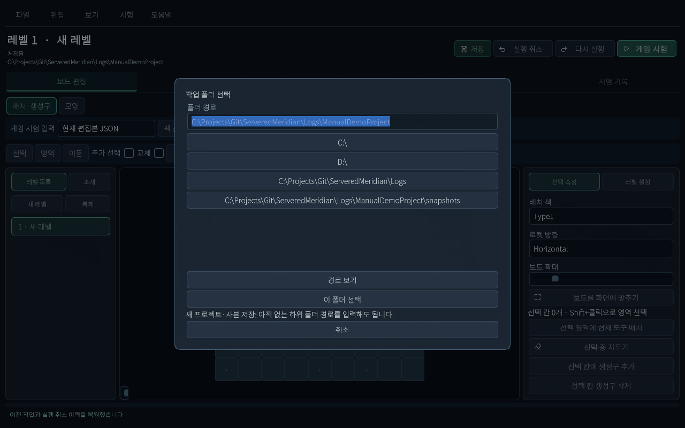
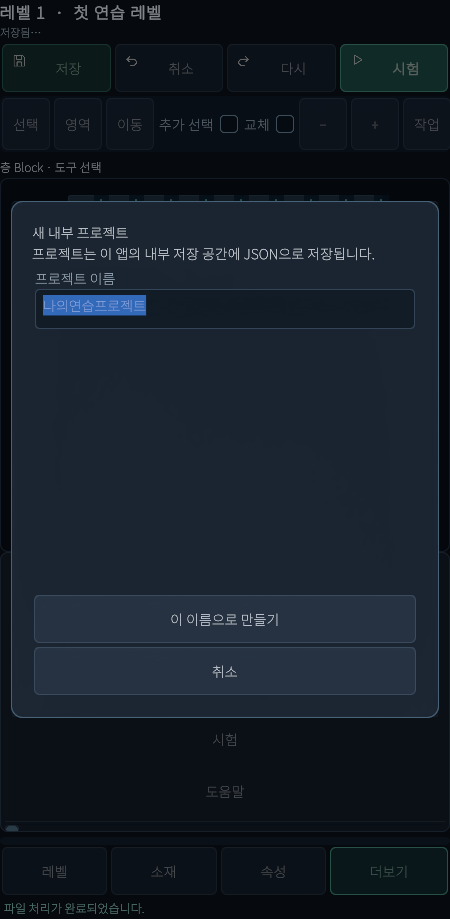

추가 · 현재 씬 기반 레벨툴
JSON 저장·다시 열기
저장은 내 작업 보관, ZIP은 기기 사이 전달입니다. 먼저 저장을 익혀 보세요.
기준2026.10.15 현재 UI · Windows / Android 레벨툴
시작 전에 알아둘 것
프로젝트는 여러 레벨과 참조 설정을 함께 담는 작업 상자입니다. 레벨은 그 안의 스테이지 하나입니다.
이전: 레벨 .asset을 선택해 저장 → 현재: project.json이 있는 작업 폴더를 열고 JSON으로 저장합니다. 파일을 직접 수정하지 않아도 됩니다.
준비물: Windows에서는 쓸 수 있는 작업 폴더, Android에서는 앱 내부 저장 공간. 앱·씬 열기를 먼저 확인하세요.
처음 한 번: 새 프로젝트 만들기
Windows
- 파일 → 새 프로젝트를 누릅니다.
- 폴더 경로에 새 위치를 입력합니다. 예:
D:/LevelProjects/Practice01. 예시이므로 실제 쓸 수 있는 위치로 바꾸세요. - 필요하면 경로 보기로 하위 폴더를 봅니다. 새 하위 폴더는 아직 없어도 됩니다.
- 이 폴더 선택을 누릅니다. 완료되면 목록에 새 레벨, 제목 아래 작업 폴더가 표시됩니다. 기존 프로젝트가 있는 폴더를 새 프로젝트로 덮어쓰려고 하지 마세요.

캡처 경로는 검증용 연습 폴더입니다. 그대로 입력할 필요는 없습니다.
Android
- 하단 더보기 → 파일 → 새 프로젝트를 누릅니다.
- 프로젝트 이름에 “나의연습프로젝트”처럼 새 이름을 입력합니다. Windows 폴더 경로는 입력하지 않습니다.
- 이 이름으로 만들기를 누릅니다. 같은 이름이 있으면 다른 이름을 정합니다. 완료 후 레벨에서 새 레벨을 봅니다.

내부 프로젝트 창 표시만 확인했으며 실제 Android 저장 동작은 미검증입니다.
매번 하는 작업: JSON 저장
- 레벨을 편집합니다. 글자 조합을 마치고 입력칸 밖을 누릅니다.
- 상단 저장을 누릅니다. Windows는 Ctrl+S도 됩니다.
- 하단에 파일 처리가 완료되었습니다., 제목 아래에 저장됨이 표시되는지 확인합니다. 오류가 나오면 저장 완료로 생각하지 마세요.
- 다른 기기에도 보관하려면 ZIP 내보내기를 합니다. 저장만으로 다른 기기에 파일이 생기지는 않습니다.

저장한 프로젝트 다시 열기
Windows
- 파일 → 작업 폴더 열기 또는 Ctrl+O를 누릅니다.
- project.json이 들어 있는 프로젝트 폴더를 고릅니다. snapshots 안쪽이나 JSON 파일 하나를 고르지 않습니다.
- 이 폴더 선택 후 제목·레벨 목록·배치가 저장한 상태인지 확인합니다.
Android 또는 ZIP으로 받은 내부 프로젝트
Android의 파일 → 작업 폴더 열기는 내부 프로젝트 열기 창을 보여줍니다. 목록의 이름을 고르고 선택한 프로젝트 열기를 누릅니다. 파일 → 최근 내부 프로젝트로도 찾을 수 있습니다. Windows 일반 작업 폴더는 최근 내부 프로젝트가 아닌 작업 폴더 열기로 여세요.
원본을 남기고 사본으로 작업하기
- 파일 → 사본 저장(Windows: Ctrl+Shift+S)을 누릅니다.
- 새 작업 폴더 또는 Android의 새 내부 프로젝트 이름을 지정합니다.
- 완료 후 저장 대상이 사본으로 바뀝니다. 이후 저장은 사본에 반영됩니다. 원본을 계속 고치려면 원본을 다시 여세요.
미저장 질문·복구 질문이 뜨면
- 저장 후 계속: 현재 수정을 저장하고 다른 자료로 이동합니다.
- 버리고 계속: 미저장 수정을 버리고 이동합니다. 필요한 수정이 있으면 고르지 마세요.
- 취소: 열기 작업을 취소하고 현재 편집을 유지합니다.
- 이전 작업 복원: 중단 전 초안·선택·실행 취소 이력을 복원합니다. 복원만으로 원본 JSON을 저장하지 않으므로 확인 후 저장하세요.
- 저장본으로 돌아가기: 복구 초안 대신 정상 저장본을 사용합니다.
- 파일 → 이전 정상본: 이전 정상 저장본을 확인합니다. 복구본은 사본 저장으로 다른 폴더에 보관하세요.
파일을 직접 옮겨야 하나요?
보통은 ZIP 내보내기를 쓰면 됩니다. Windows에서 폴더로 복사할 때는 프로젝트 폴더 전체를 함께 옮기세요. project.json은 참조 문서 목록이므로 혼자 옮기면 레벨을 읽지 못합니다. snapshots 아래 문서 이름은 자동 생성됩니다.
JSON 저장은 Unity 에셋 저장, MemoryPack 생성, 앱 빌드를 자동 실행하지 않습니다. Android 앱 삭제 전에는 필요한 작업을 ZIP으로 따로 보관하세요.
변경 이력
| 변경일 | 변경 항목 | 이전 → 현재 | 이유 |
|---|---|---|---|
| 2026.10.15 | 현재 씬 레벨툴 안내 | 추가 · JSON·ZIP·터치 조작과 현재 화면 안내 | 현재 UI에 맞춘 초보자 설명 요청 |
설명 편집·화면 확인: 2026.10.15 · ServeredMeridian / Windows / Unity 6000.3.10f1.
Windows 씬 UI 캡처, 별도 연습 프로젝트 JSON 저장·재로드, 공통 ZIP 처리 왕복 문서 일치 확인. 모바일은 에디터에서 같은 UI를 모바일 배치로 표시했습니다. Android 실기기 터치·키보드·시스템 파일 선택과 Windows 시스템 파일 선택기 실제 조작은 이번 작업에서 확인하지 않았습니다. 브라우저 도구의 로컬 파일 접근 제한으로 넓은 화면·좁은 화면의 HTML 렌더링은 미검수입니다.